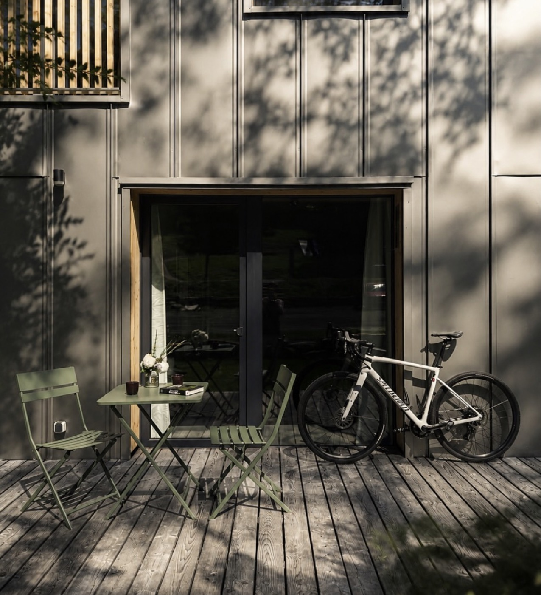
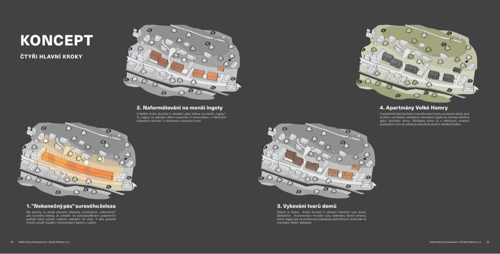

Brand style tile · 06 / 2026 Velké Hamry · Jizerské hory Drawn from Studio Reaktor study

Velké Hamry · Jizerské hory
INGOT
Inspirováno Severem. Ukováno v Jizerkách.
Positioning
Architektonicky ukovaný designový apartmán v Jizerkách. Surový navenek, jemný uvnitř. Úroveň designu, která tu není běžná.
Barvy · Colour
Paper · canvas
#F1EEE7
Concrete · lines
#BDB9AF
Anthracite · facade
#2B2B28
Ink · text
#23221F
Pine · wood accent
#C49A67
Walnut · deep wood
#7E6752
Terracotta · CTA
#BF562E
Sage · 2nd accent
#7E8769
Typografie · Type
Eyebrow Space Grotesk 600
O Apartmánu · About the apartment
Heading Space Grotesk 700
Surový navenek, jemný uvnitř.
Subhead Space Grotesk 600
Vlastní terasa a předzahrádka.
Body Inter 400 / 16px
INGOT je přízemní designový apartmán postavený podle konceptu studia Reaktor jako jeden z „ukovaných obytných ingotů" - černá kovová fasáda, teplý borový interiér. Místo na ranní kávu a večerní ticho, které většina apartmánů v Jizerkách nemá.
Natural light only. True wood tone, slightly desaturated sage greens, warm shadows. Full-bleed, editorial, architectural - the building and the light are the subject. The new pro set replaces the old generic shots. No HDR, no Airbnb-red, no staged hospitality stock.
Grafika · Illustration motif

From the study's KONCEPT pages: grey axonometric massing diagrams with terracotta and olive accent volumes, thin uppercase labels, technical line work. Reuse this language for section dividers, the “pět ukovaných ingotů” story graphic, and the map in Okolí - not photography everywhere.
Hlas · Voice
Inspirováno Severem. Ukováno v Jizerkách.Surový navenek, jemný uvnitř.87 minut z Prahy.Rezervujte napřímo. Nejlepší cena, bez prostředníka.Forged in the North. Cast in the Jizera Mountains.Raw on the outside, warm within.87 minutes from Prague.
Confident, editorial, calm. Short declaratives. CZ default, EN parallel. Never “horská chata”, never fake-Nordic fjords, never Airbnb hard-sell.